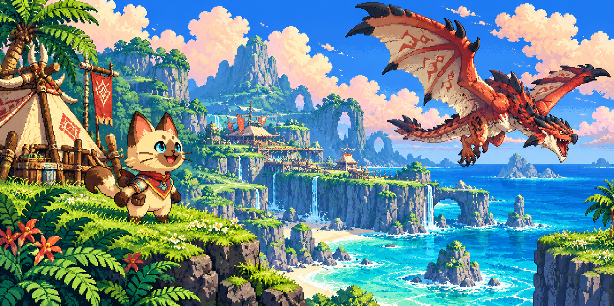
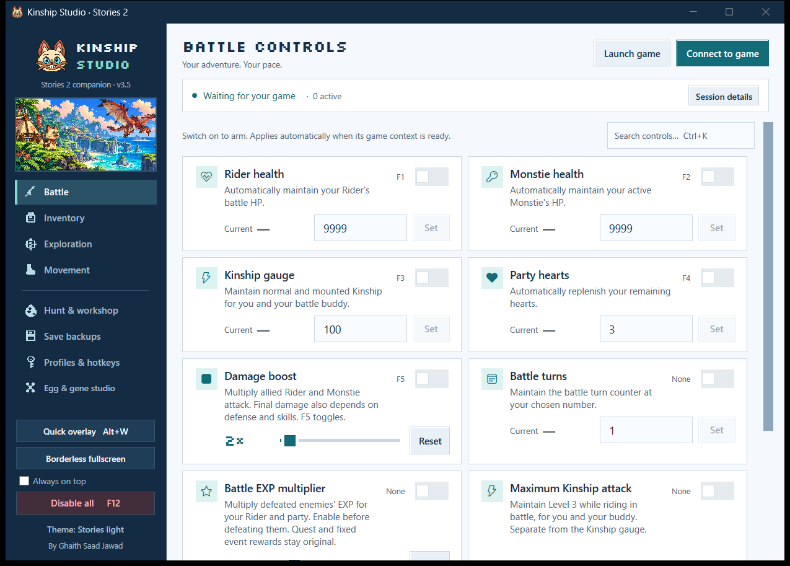
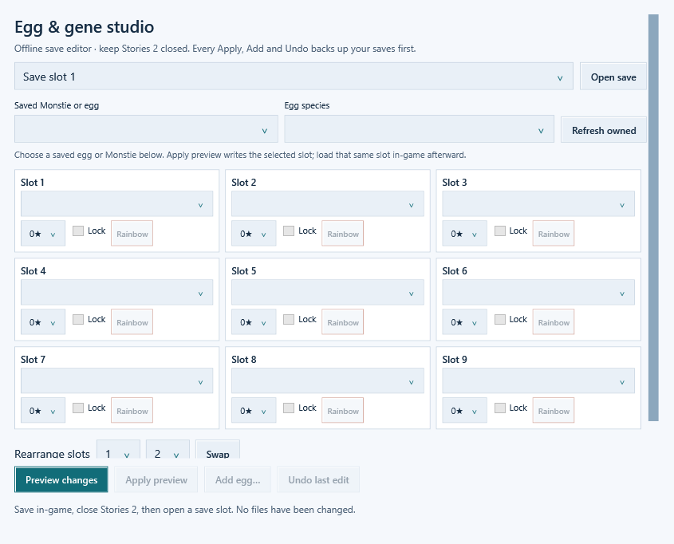
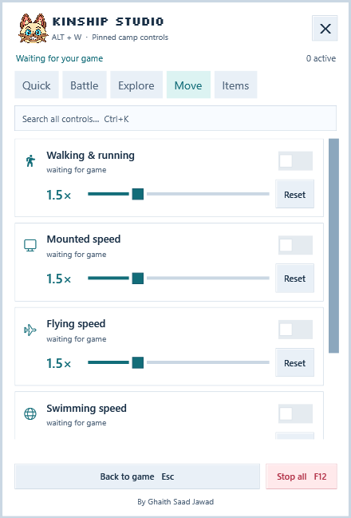

Battle on your terms
Maintain health, Kinship and hearts. Adjust damage, EXP, enemy HP and incoming damage. Reach maximum Kinship attack level and fast-forward repeat fights.
Monster Hunter Stories 2: Wings of Ruin
A free, open-source trainer and save editor for the Rider who wants more adventure—and less grinding.
v3.5.0 · Windows x64 · Updates in place · Runtime included
For solo Steam play on the inspected 1.6.1.0 build.

31 live controls, a quick panel, and a whole egg workshop.

Choose your kind of adventure
Automatic connection.
No manual address searches.
No Cheat Engine dependency.
Maintain health, Kinship and hearts. Adjust damage, EXP, enemy HP and incoming damage. Reach maximum Kinship attack level and fast-forward repeat fights.
Apply rainbow egg quality, rare-den presets and no empty pulls. Send eligible monsters back to their dens with 100% retreat. Fresh nests, better hunts.
Separate sliders for walking, riding, flying, swimming and egg carrying. Reset returns them to normal. Riding abilities still need to be unlocked.
Multiply loot by 2×, 5× or 10×. Manage Zenny, Bottle Caps and owned item stacks. Preserve ordinary consumables and apply crafting/forging settings.
Reveal loaded map markers. Gather from 4× farther away, shorten manual gathering, or enable material auto-collect. Choose a Prayer Pot effect to maintain.
Add unhatched eggs, even to an empty carton. Pick species, edit stars and locks, place Rainbow Genes and arrange your 3 × 3 gene board.
Story and quest restrictions still apply. Read feature behavior and compatibility.
Offline Egg & Gene Studio
Edit a saved game while Stories 2 is closed. Start from a new egg or copy an existing one, then shape its gene board.


Stay in the adventure
Open a compact panel over your windowed or borderless game. Change the same controls and sliders as the main app, then return to play.
True exclusive fullscreen is not supported. F12 does not uninstall table presets; restore those in Hunt & workshop.
One installation. Easy updates. Your adventure.
Get the Windows x64 ZIP and open RidersToolkit.exe. The internal filename stays compatible with earlier versions.
Start Stories 2 from Steam or the trainer. Let automatic connection finish, then enable your chosen controls.
Use Alt+W while playing. Find Check for updates in Profiles & hotkeys. For Egg Studio or table presets, save and close the game first.
The inspected target is Monster Hunter Stories 2: Wings of Ruin, Steam Windows x64, executable version 1.6.1.0. This is a single-player tool. Other builds, consoles, emulators and multiplayer are not supported targets.
Yes. The source code is MIT-licensed and the Windows download is free. No account or subscription is needed to use the app. The release is currently unsigned; a trusted publisher certificate has not yet been provisioned. Updates already replace the same installed app and preserve settings. Source, build instructions and download checksums are public. Updates and code signing.
Every Apply, Add and Undo makes a fresh verified backup before writing. The game must be closed. Unsupported saves, a failed backup, or a file changing underneath the editor block the operation. Previewing alone does not edit the save.
No Cheat Engine installation is needed. The Windows release includes its runtime. Contributors need Windows and the .NET 10 SDK to build from source.
For v3.5.0, 110 engine checks, 123 interface checks and 11 installer checks passed on the author's supported installation, alongside user-confirmed gameplay. A public CI workflow is provided for 105 portable engine checks; five installed-game checks are explicitly skipped because game archives are not redistributed. A successful hosted run is not claimed for this release; see GitHub Actions for current status. Different builds and contexts are not universally guaranteed.